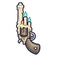

คนงานเหมืองผี
มอนธาตุวิญญาณ Lv 57–78
เจอที่
| แมพ | โซน | Lv | ภูมิภาค |
|---|---|---|---|
| เหมืองลึกผลึกส้ม | 62–68 | แดนใต้สีแดง | |
| เหมืองลึกผลึกส้ม | ห้องผลึกใหญ่ | 68–70 | แดนใต้สีแดง |
| ทางรางเหมืองแขวน | 57–78 | แดนใต้สีแดง | |
| ห้องสูบน้ำเหมืองท่วม | 62–68 | แดนใต้สีแดง | |
| ห้องสูบน้ำเหมืองท่วม | เครื่องสูบน้ำยักษ์ | 68–70 | แดนใต้สีแดง |
| โถงหินจีโอด | 62–68 | แดนใต้สีแดง | |
| โถงหินจีโอด | จีโอดยักษ์ | 68–70 | แดนใต้สีแดง |
| ค่ายคนงานใต้ดิน | 62–68 | แดนใต้สีแดง | |
| ค่ายคนงานใต้ดิน | ปล่องลิฟต์เหมือง | 68–70 | แดนใต้สีแดง |
ค่าสถานะตามเลเวล
| Lv | HP | ATK | DEF | MDEF | EXP | Job |
|---|---|---|---|---|---|---|
| 57 | 15,771 | 84–126 | 18 | 19 | 80 | 60 |
| 67 | 24,840 | 101–151 | 21 | 22 | 93 | 70 |
| 78 | 38,220 | 122–182 | 25 | 26 | 107 | 80 |
ตีด้วยธาตุไหนดี
แรงขึ้น: วิญญาณ ×1.25
เบาลง: ไม่มีธาตุ ×0.25
วัตถุดิบที่ดรอป
| ของ | โอกาส | |
|---|---|---|
| ตะเกียงหมวกเหมือง | 55% | 1 ชิ้น (15% ได้ 2) |
อุปกรณ์ที่ดรอป (5)
| ของ | โอกาส |
|---|---|
| 0.12% | |
| 0.06% | |
| 0.06% | |
 ปืนพกคู่เทียนวิญญาณ | 0.06% |
| 0.06% |
สกิล
วาร์ป (Lv 25+) · วาร์ป (Lv 60+) · ม่านเวท (Lv 60+)